Spring Boot：Bean 与自动配置
前面十多天的课程当中，我们学习的都是web开发的技术使用，都是面向应用层面的，我们学会了怎么样去用。而我们今天所要学习的是web后端开发的最后一个篇章springboot原理篇，主要偏向于底层原理。
我们今天的课程安排包括这么三个部分：
- 配置优先级
- Bean的管理
- 剖析Springboot的底层原理
配置优先级
在我们前面的课程当中，我们已经讲解了SpringBoot项目当中支持的三类配置文件：
- application.properties
- application.yml
- application.yaml
在SpringBoot项目当中，我们要想配置一个属性，可以通过这三种方式当中的任意一种来配置都可以，那么如果项目中同时存在这三种配置文件，且都配置了同一个属性，如：Tomcat端口号，到底哪一份配置文件生效呢？
- application.properties
server.port=8081
- application.yml
server:
port: 8082
- application.yaml
server:
port: 8082
我们启动SpringBoot程序，测试下三个配置文件中哪个Tomcat端口号生效：
- properties、yaml、yml三种配置文件同时存在。 配置好了，启动服务，测试一下：
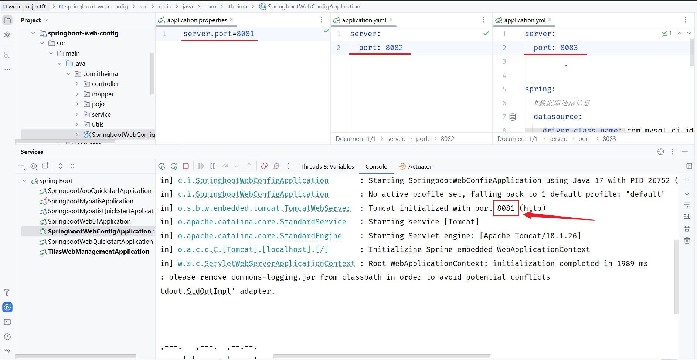
properties、yaml、yml三种配置文件，优先级最高的是properties
- yaml、yml两种配置文件同时存在

yaml、yml 两种配置文件，优先级最高的是yml。
配置文件优先级排名（从高到低）：
- properties配置文件
- yml配置文件
- yaml配置文件
**注意事项：**虽然springboot支持多种格式配置文件，但是在项目开发时，推荐统一使用一种格式的配置。（yml是主流）
在SpringBoot项目当中除了以上3种配置文件外，SpringBoot为了增强程序的扩展性，除了支持配置文件的配置方式以外，还支持另外两种常见的配置方式：
- Java系统属性配置 （格式： -Dkey=value）
-Dserver.port=9000
- 命令行参数 （格式：--key=value）
--server.port=10010
那在idea当中运行程序时，如何来指定Java系统属性和命令行参数呢？
- 编辑启动程序的配置信息

打开之后，选择 Modify options , 选择 Add VM options, Program arguments
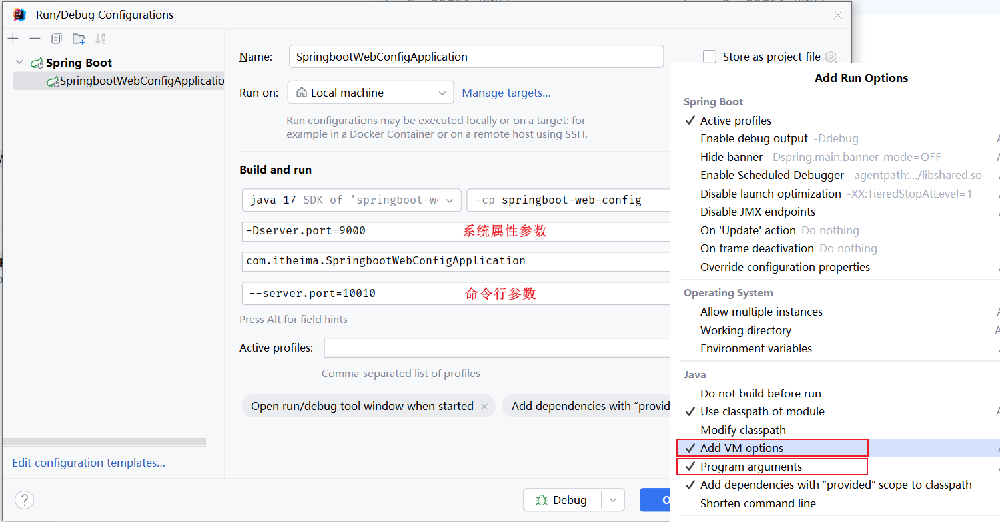
重启服务，同时配置Tomcat端口(application.properties、系统属性、命令行参数)，测试哪个Tomcat端口号生效：
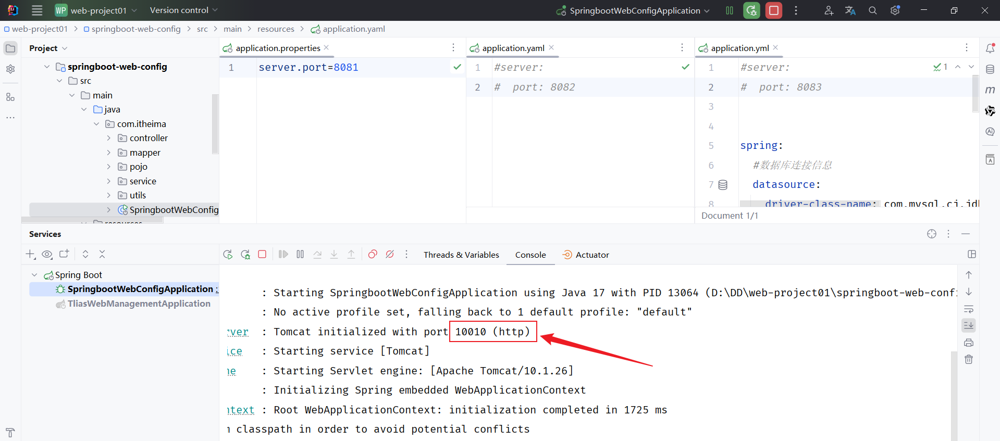
说明，命令行参数的优先级时最高的，同时配置的情况下，命令行参数的配置项生效。
删除命令行参数配置，重启SpringBoot服务：
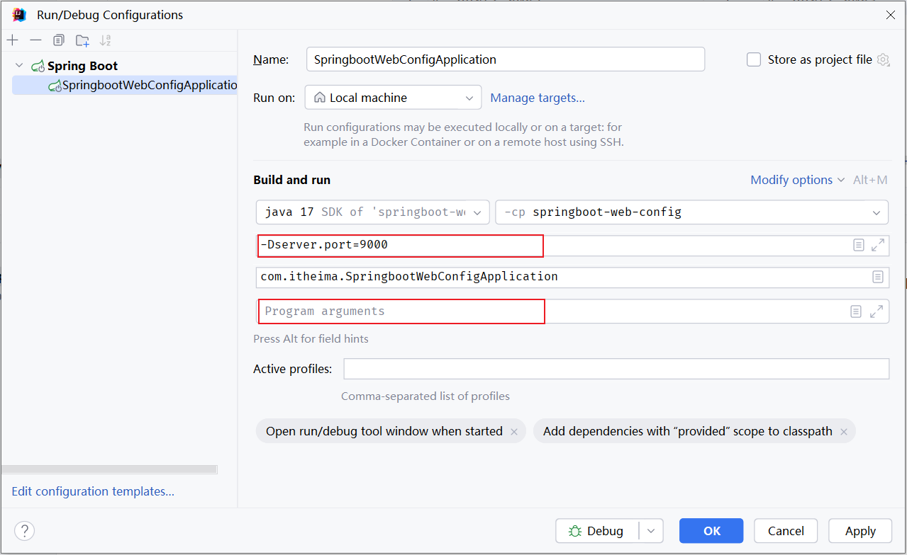
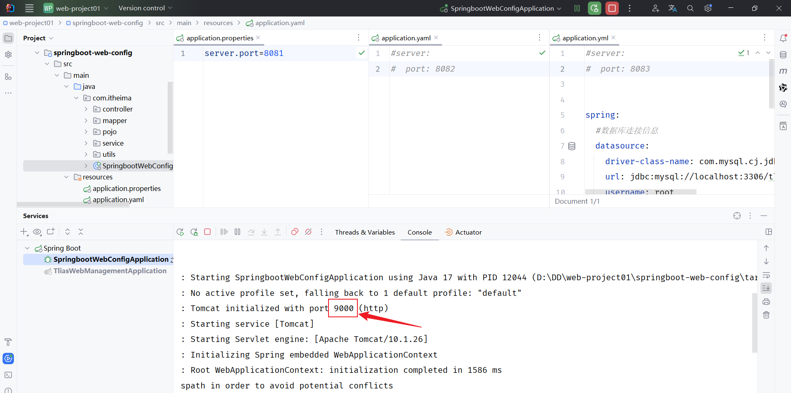
五种配置方式的优先级： 命令行参数 > 系统属性参数 > properties参数 > yml参数 > yaml参数
思考：如果项目已经打包上线了，这个时候我们又如何来设置Java系统属性和命令行参数呢？
若是新版的Idea 的话 会自动隐藏掉 一些配置选项 --> 需要先配置现实项才能打开 ;
java -Dserver.port=9000 -jar XXXXX.jar --server.port=10010
下面我们来演示下打包程序运行时指定Java系统属性和命令行参数：
- 执行maven打包指令package，把项目打成jar文件
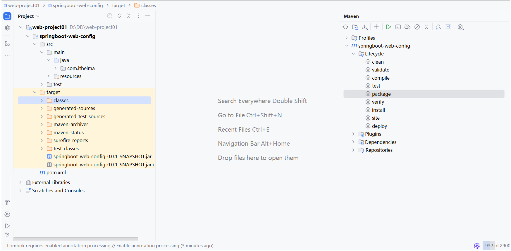
- 使用命令：java -jar 方式运行jar文件程序。
同时设置Java系统属性和命令行参数
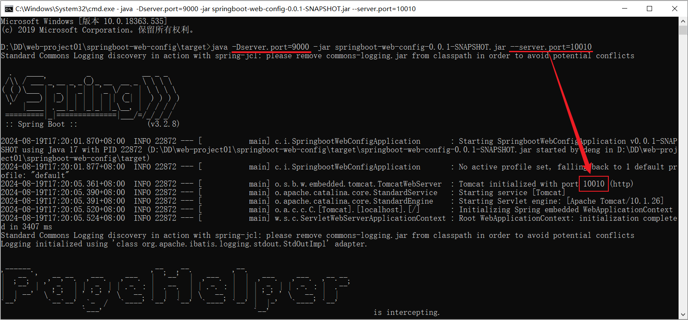
仅设置Java系统属性
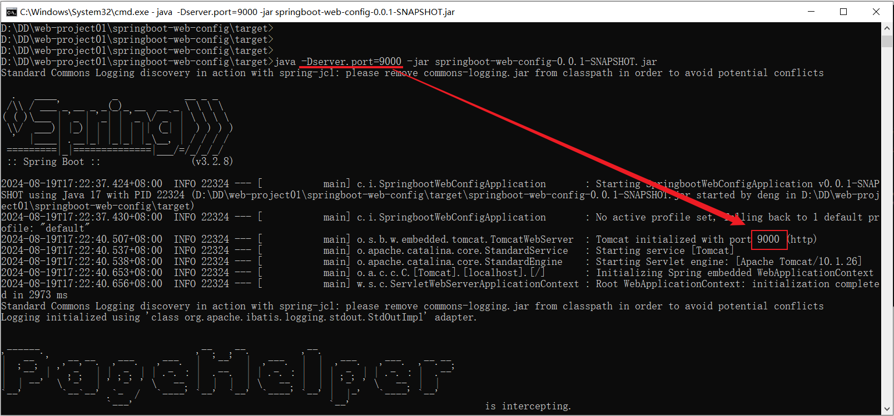
注意事项：
- Springboot项目进行打包时，需要引入插件
spring-boot-maven-plugin(基于官网骨架创建项目，会自动添加该插件)
在SpringBoot项目当中，常见的属性配置方式有5种， 3种配置文件，加上2种外部属性的配置(Java系统属性、命令行参数)。通过以上的测试，我们也得出了优先级(从低到高)：
- application.yaml（忽略）
- application.yml
- application.properties
- java系统属性（-Dxxx=xxx） server.port=10010 ;
- 命令行参数（--xxx=xxx）
由于外部的命令行参数优先级由于代码中这实现的优先级 , 可以在之后的运行中随时修改jar包内部的参数 :
例如修改mysql 中用户的访问密码 ;
Bean的管理
在前面的课程当中，我们已经讲过了我们可以通过Spring当中提供的注解@Component以及它的三个衍生注解（@Controller、@Service、@Repository）来声明IOC容器中的bean对象，同时我们也学习了如何为应用程序注入运行时所需要依赖的bean对象，也就是依赖注入DI。
我们今天主要学习IOC容器中Bean的其他使用细节，主要学习以下三方面：
- bean的作用域配置
- 管理第三方的bean对象
接下来我们先来学习第一方面，Bean的作用域。
Bean的作用域
在前面我们提到的IOC容器当中，默认bean对象是单例的 (只有一个实例对象)。在Spring中支持五种作用域，后三种在web环境才生效：
作用域 | 说明 |
singleton | 容器内同名称的bean只有一个实例（单例）（默认） |
prototype | 每次使用该bean时会创建新的实例（非单例） |
request | 每个请求范围内会创建新的实例（web环境中，了解） |
session | 每个会话范围内会创建新的实例（web环境中，了解） |
application | 每个应用范围内会创建新的实例（web环境中，了解） |
知道了bean的5种作用域了，我们要怎么去设置一个bean的作用域呢？
- 可以借助Spring中的@Scope注解来进行配置作用域
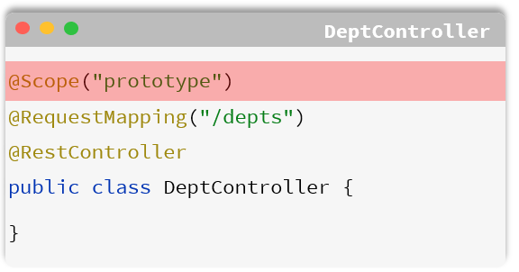
1). 测试一
- 控制器
- 从Spring boot 项目中获取到 IOC 容器 ;
- 需要实现注入 适用ApplicatinContext
- @Autowired 实现注入 ;
- 未定义的Bean对象默认为类名的首字母小写 ;
//默认bean的作用域为：singleton (单例)
@Lazy : 会延迟创建对象的时间到第一次使用 ; 22222112222222222222222222222222222222222222222
@RestController
@RequestMapping("/depts")
public class DeptController {
@Autowired
private DeptService deptService;
public DeptController(){
System.out.println("DeptController constructor ....");
}
//省略其他代码...
}
- 测试类
@SpringBootTest
class SpringbootWebConfig2ApplicationTests {
@Autowired
private ApplicationContext applicationContext; //IOC容器对象
//bean的作用域
@Test
public void testScope(){
for (int i = 0; i < 10; i++) {
DeptController deptController = applicationContext.getBean(DeptController.class);
System.out.println(deptController);
}
}
}
重启SpringBoot服务，运行测试方法，查看控制台打印的日志：
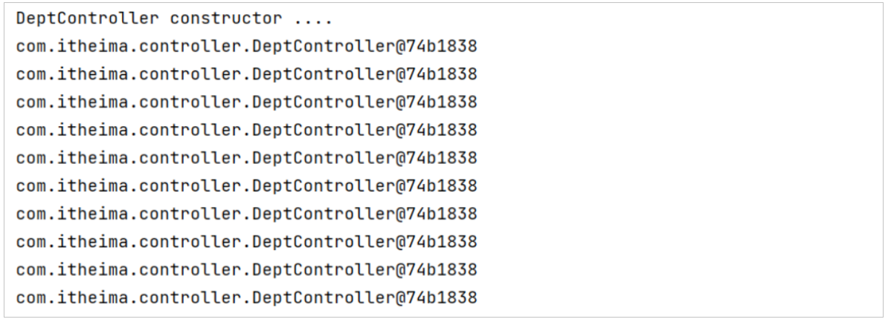
注意事项：
- IOC容器中的bean默认使用的作用域：singleton (单例) , 默认旨在容器启动的时候创建一次
- 默认singleton的bean，在容器启动时被创建，可以使用@Lazy注解来延迟初始化(延迟到第一次使用时)
2). 测试二
修改控制器DeptController代码：
@Scope("prototype") //bean作用域为非单例
@RestController
@RequestMapping("/depts")
public class DeptController {
@Autowired
private DeptService deptService;
public DeptController(){
System.out.println("DeptController constructor ....");
}
//省略其他代码...
}
重启SpringBoot服务，再次执行测试方法，查看控制吧打印的日志：
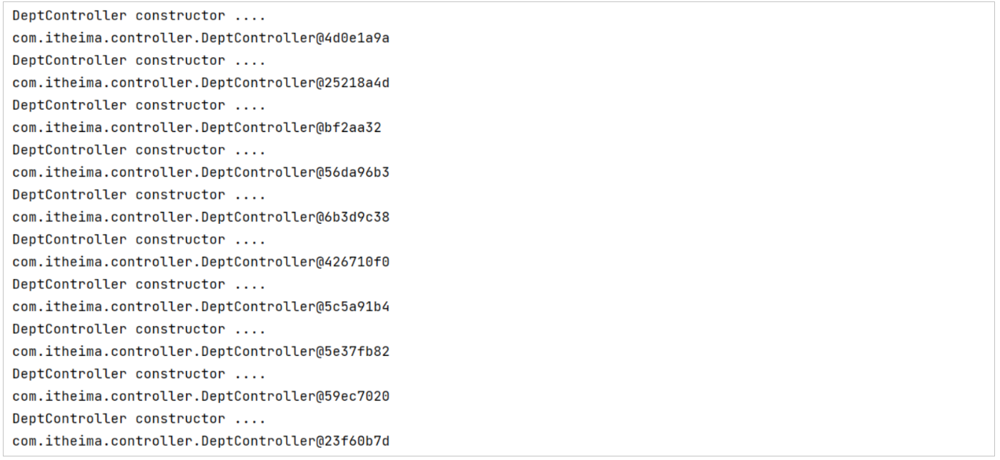
注意事项：
- prototype的bean，每一次使用该bean的时候都会创建一个新的实例
- 实际开发当中，绝大部分的Bean是单例的，也就是说绝大部分Bean不需要配置scope属性
- 默认singleton的bean，在容器启动时被创建，可以使用@Lazy注解来延迟初始化（延迟到第一次使用时）
- prototype的bean，每一次使用该bean的时候都会创建一个新的实例。
- 实际开发当中，绝大部分的bean是单例的，也就是说绝大部分bean不需要配置scope属性。
- 只有针对有状态的bean对象才会使用prototype属性的 Bean 对象;
- bean 的线程安全取决于bean duixinag 的状态和bean对象的作用域;
- 面对单例 的bean : 如果是无状态的bean , 内部不会保存任何状态的信息, 那就就是线程安全的;
- 面对有状态的bean : 多线程访问, 可能造成状态不一致问题, 线程不安全;
第三方Bean
学习完bean的获取、bean的作用域之后，接下来我们再来学习第三方bean的配置。
之前我们所配置的bean，像controller、service，dao三层体系下编写的类，这些类都是我们在项目当中自己定义的类(自定义类)。当我们要声明这些bean，也非常简单，我们只需要在类上加上@Component以及它的这三个衍生注解（@Controller、@Service、@Repository），就可以来声明这个bean对象了。
但是在我们项目开发当中，还有一种情况就是
这个类它不是我们自己编写的，而是我们引入的第三方依赖当中提供
我们是无法使用 @Component 及其衍生注解来声明bean的
此时就需要使用@Bean注解来声明bean 了
演示1：
@Configuration
public class RedisConfig {
// 1. Redis连接工厂
@Bean
public RedisConnectionFactory redisConnectionFactory() {
return new LettuceConnectionFactory();
}
// 2. RedisTemplate
@Bean
public RedisTemplate<String, Object> redisTemplate(RedisConnectionFactory factory) {
RedisTemplate<String, Object> template = new RedisTemplate<>();
template.setConnectionFactory(factory);
return template;
}
// 3. 缓存管理器
@Bean
public CacheManager cacheManager(RedisConnectionFactory factory) {
return RedisCacheManager.builder(factory).build();
}
// 4. 消息监听器容器
@Bean
public RedisMessageListenerContainer redisContainer(RedisConnectionFactory factory) {
RedisMessageListenerContainer container = new RedisMessageListenerContainer();
container.setConnectionFactory(factory);
return container;
}
}
实际项目中不建议创建在启动类中, 建议创建一个专门用来管理的第三方类对象 使用@Configuration 声明配置的是第三方的启动类后 ,下面创建使用 @Bean , 直接在这个大类创建就行
@Configuration
public class OssConfig {
@Bean
public OSSClient ossClient() {
// 直接 new 第三方类的对象
return new OSSClient("endpoint", "key", "secret");
}
}
// 使用
@Service
public class UploadService {
@Autowired
private OSSClient ossClient; // 直接注入
}
- 在启动类中直接声明这个Bean。比如：我们可以将我们之前使用的阿里云OSS操作的工具类，基于@Bean注解的方式来声明Bean。
import com.itheima.utils.AliyunOSSOperator;
import com.itheima.utils.AliyunOSSProperties;
import org.springframework.boot.SpringApplication;
import org.springframework.boot.autoconfigure.SpringBootApplication;
import org.springframework.boot.web.servlet.ServletComponentScan;
import org.springframework.context.annotation.Bean;
import org.springframework.scheduling.annotation.EnableScheduling;
@ServletComponentScan
@EnableScheduling
@SpringBootApplication
public class TliasWebManagementApplication {
public static void main(String[] args) {
SpringApplication.run(TliasWebManagementApplication.class, args);
}
@Bean
public AliyunOSSOperator aliyunOSSOperator(AliyunOSSProperties ossProperties) {
return new AliyunOSSOperator(ossProperties);
}
}
- 测试：
package com.itheima;
import cn.hutool.core.io.FileUtil;
import com.itheima.utils.AliyunOSSOperator;
import org.junit.jupiter.api.Test;
import org.springframework.beans.factory.annotation.Autowired;
import org.springframework.boot.test.context.SpringBootTest;
import java.io.File;
import java.util.List;
import java.util.Set;
@SpringBootTest
class TliasWebManagementApplicationTests {
@Autowired
private AliyunOSSOperator aliyunOSSOperator;
@Test
void testUploadFiles() throws Exception {
// 上传文件, 本地文件 C:\Users\deng\Pictures\6.jpg
byte[] content = FileUtil.readBytes(new File("C:\\Users\\deng\\Pictures\\6.jpg"));
String url = aliyunOSSOperator.upload(content, "6.jpg");
System.out.println(url);
}
@Test
void testListFiles() throws Exception {
// 获取文件列表
List<String> objectNameList = aliyunOSSOperator.listFiles();
objectNameList.forEach(System.out::println);
}
@Test
void testDelFiles() throws Exception {
// 删除文件
aliyunOSSOperator.deleteFile("2024/06/43b48632-3a05-4e1d-a00d-96f2d57b2a84.jpg");
}
}
演示2：
若要管理的第三方 bean 对象，建议对这些bean进行集中分类配置，可以通过 @Configuration 注解声明一个配置类。【推荐】
package com.itheima.config;
import com.itheima.utils.AliyunOSSOperator;
import com.itheima.utils.AliyunOSSProperties;
import org.springframework.context.annotation.Bean;
import org.springframework.context.annotation.Configuration;
@Configuration
public class OSSConfig {
@Bean
public AliyunOSSOperator aliyunOSSOperator(AliyunOSSProperties ossProperties) {
return new AliyunOSSOperator(ossProperties);
}
}
- 通过
@Bean注解的name 或 value属性可以声明bean的名称，如果不指定，默认bean的名称就是方法名。 - 如果第三方bean需要依赖其他bean对象，直接在bean定义方法中设置形参即可，容器会根据类型自动装配。
SpringBoot原理
经过前面10多天课程的学习，大家也会发现基于SpringBoot进行web程序的开发是非常简单、非常高效的。
SpringBoot使我们能够集中精力地去关注业务功能的开发，而不用过多地关注框架本身的配置使用。而我们前面所讲解的都是面向应用层面的技术，接下来我们开始学习SpringBoot的原理，这部分内容偏向于底层的原理分析。
在剖析SpringBoot的原理之前，我们先来快速回顾一下我们前面所讲解的Spring家族的框架。
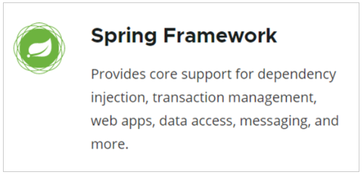
Spring是目前世界上最流行的Java框架，它可以帮助我们更加快速、更加容易的来构建Java项目。而在Spring家族当中提供了很多优秀的框架，而所有的框架都是基于一个基础框架的SpringFramework(也就是Spring框架)。而前面我们也提到，如果我们直接基于Spring框架进行项目的开发，会比较繁琐。
这个繁琐主要体现在两个地方：
- 在pom.xml中依赖配置比较繁琐，在项目开发时，需要自己去找到对应的依赖，还需要找到依赖它所配套的依赖以及对应版本，否则就会出现版本冲突问题。
- 在使用Spring框架进行项目开发时，需要在Spring的配置文件中做大量的配置，这就造成Spring框架入门难度较大，学习成本较高。
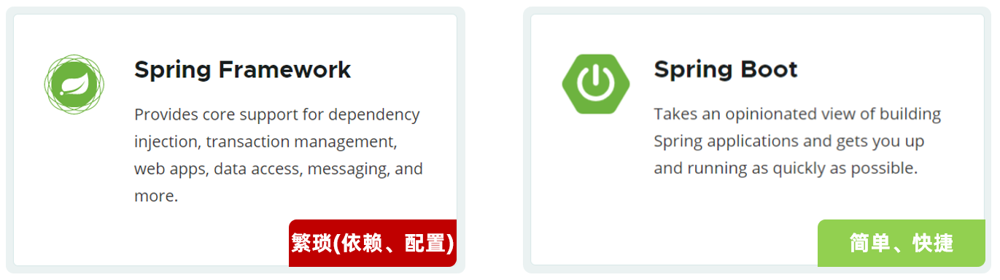
- 基于Spring存在的问题，官方在Spring框架4.0版本之后，又推出了一个全新的框架：SpringBoot。
- 通过 SpringBoot来简化Spring框架的开发(是简化不是替代)。我们直接基于SpringBoot来构建Java项目，会让我们的项目开发更加简单，更加快捷。
SpringBoot框架之所以使用起来更简单更快捷，是因为SpringBoot框架底层提供了两个非常重要的功能：一个是起步依赖，一个是自动配置。
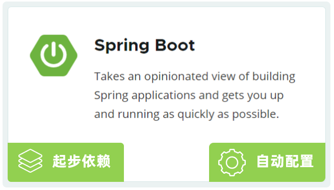
- 通过SpringBoot所提供的起步依赖，就可以大大的简化pom文件当中依赖的配置，从而解决了Spring框架当中依赖配置繁琐的问题。
- 通过自动配置的功能就可以大大的简化框架在使用时bean的声明以及bean的配置。我们只需要引入程序开发时所需要的起步依赖，项目开发时所用到常见的配置都已经有了，我们直接使用就可以了。
简单回顾之后，接下来我们来学习下SpringBoot的原理。其实学习SpringBoot的原理就是来解析SpringBoot当中的起步依赖与自动配置的原理。我们首先来学习SpringBoot当中起步依赖的原理。
起步依赖
假如我们没有使用SpringBoot，用的是Spring框架进行web程序的开发，此时我们就需要引入web程序开发所需要的一些依赖。
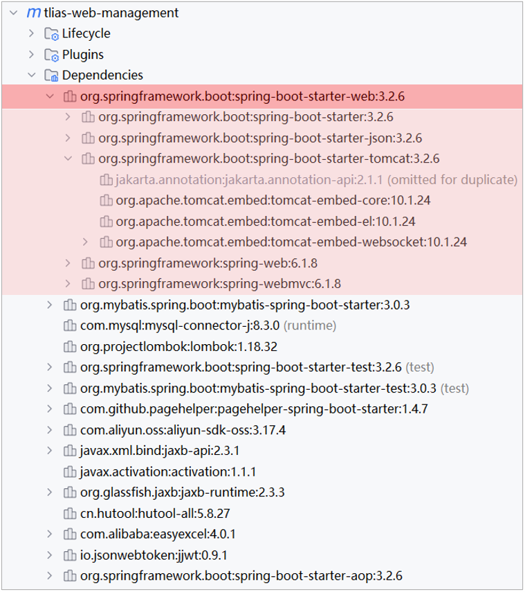
当我们引入了 spring-boot-starter-web 之后，maven会通过依赖传递特性，将web开发所需的常见依赖都传递下来。

所以，起步依赖的原理就是Maven的依赖传递。
- 在SpringBoot给我们提供的这些起步依赖当中，已提供了当前程序开发所需要的所有的常见依赖(官网地址：https://docs\.spring\.io/spring\-boot/docs/2\.7\.7/reference/htmlsingle/\#using\.build\-systems\.starters\)。
- 比如：springboot-starter-web，这是web开发的起步依赖，在web开发的起步依赖当中，就集成了web开发中常见的依赖：json、web、webmvc、tomcat等。我们只需要引入这一个起步依赖，其他的依赖都会自动的通过Maven的依赖传递进来。
自动配置
SpringBoot的自动配置就是当spring容器启动后，一些配置类、bean对象就自动存入到了IOC容器中，不需要我们手动去声明，从而简化了开发，省去了繁琐的配置操作。
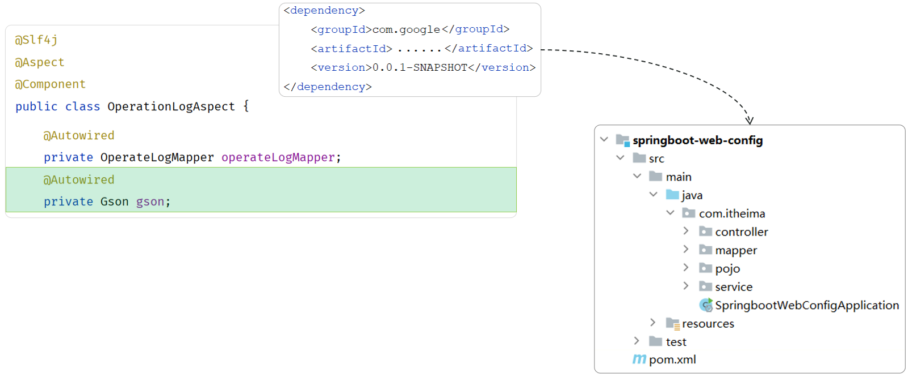
比如，在我们前面讲解AOP记录日志的那个案例中，我们要将一个对象转为json，直接注入一个Gson，然后就可以直接使用了。而我们在我们整个项目中，也并未配置Gson这个类型的bean，为什么可以直接注入使用呢？ 原因就是因为这个bean，springboot中已经帮我们自动配置完毕了，我们是可以直接使用的。
那接下来，我们就要来解 d析，SpringBoot中到底是如何完成自动配置的。
实现方案
这一节
我们知道了什么是自动配置之后，接下来我们就要来剖析自动配置的原理。解析自动配置的原理就是分析在 SpringBoot项目当中，我们引入对应的依赖之后，是如何将依赖jar包当中所提供的bean以及配置类直接加载到当前项目的SpringIOC容器当中的。
接下来，我们就直接通过代码来分析自动配置原理。
- 准备工作：在Idea中导入"资料\03. 自动配置原理" 下的
itheima-utils工程 - 在SpringBoot项目
spring-boot-web-config工程中，通过坐标引入itheima-utils依赖
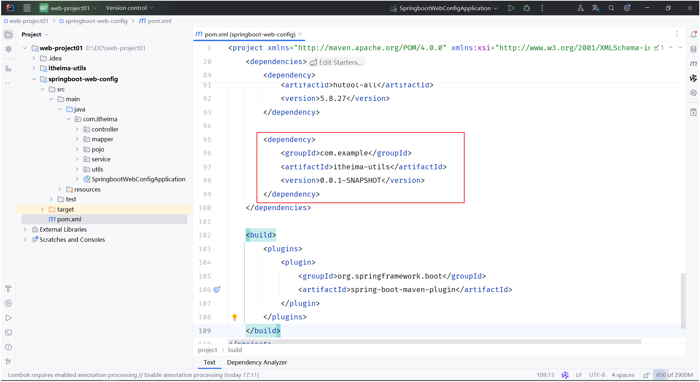
1、引入的 itheima-utils 中配置如下:
@Component
public class TokenParser {
public void parse(){
System.out.println("TokenParser ... parse ...");
}
}
2、在测试类中，添加测试方法
@SpringBootTest
public class AutoConfigurationTests {
@Autowired
private ApplicationContext applicationContext;
@Test
public void testTokenParse(){
System.out.println(applicationContext.getBean(TokenParser.class));
}
//省略其他代码...
}
3、执行测试方法
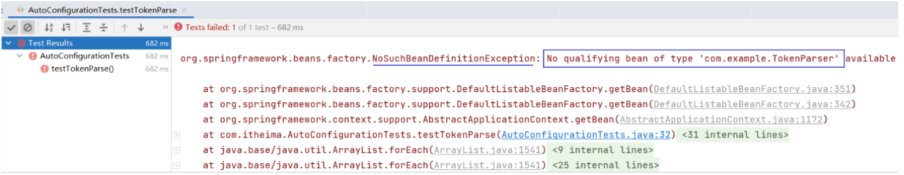
异常信息描述： 没有com.example.TokenParse类型的bean
说明：在Spring容器中没有找到com.example.TokenParse类型的bean对象
思考：引入进来的第三方依赖当中的bean以及配置类为什么没有生效？
- 原因在我们之前讲解IOC的时候有提到过，在类上添加
@Component注解来声明bean对象时，还需要保证@Component注解能被Spring的组件扫描到。 - SpringBoot项目中的
@SpringBootApplication注解，具有包扫描的作用，但是它只会扫描启动类所在的当前包以及子包。 - 当前包：com.itheima， 第三方依赖中提供的包：com.example（扫描不到）
那么如何解决以上问题的呢？
- 方案1：
@ComponentScan组件扫描 - 方案2：
@Import导入（使用@Import导入的类会被Spring加载到IOC容器中）
方案一
@ComponentScan组件扫描
注意的是 : 一旦加上扫描的注解范围, 其原本选中的扫描范围就会自动失效
@SpringBootApplication
@ComponentScan({"com.itheima","com.example"}) //指定要扫描的包
public class SpringbootWebConfigApplication {
public static void main(String[] args) {
SpringApplication.run(SpringbootWebConfigApplication.class, args);
}
}
重新执行测试方法，控制台日志输出：
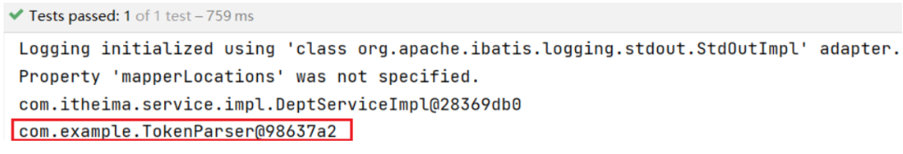
大家可以想象一下，如果采用以上这种方式来完成自动配置，那我们进行项目开发时，当需要引入大量的第三方的依赖，就需要在启动类上配置N多要扫描的包，这种方式会很繁琐。而且这种大面积的扫描性能也比较低。
缺点：
- 使用繁琐
- 性能低
结论：SpringBoot中并没有采用以上这种方案。
方案二
@Import导入
导入形式主要有以下几种：
导入普通类
导入配置类
导入ImportSelector接口实现类
1). 使用@Import**导入普通类：**
@Import(TokenParser.class) //导入的类会被Spring加载到IOC容器中
@SpringBootApplication
public class SpringbootWebConfigApplication {
public static void main(String[] args) {
SpringApplication.run(SpringbootWebConfigApplication.class, args);
}
}
重新执行测试方法，控制台日志输出：
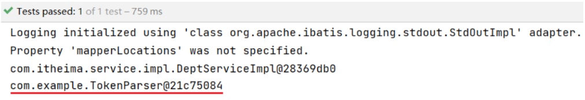
2). 使用@Import导入配置类：
- 配置类
@Configuration
public class HeaderConfig {
@Bean
public HeaderParser headerParser(){
return new HeaderParser();
}
@Bean
public HeaderGenerator headerGenerator(){
return new HeaderGenerator();
}
}
- 启动类
@Import(HeaderConfig.class) //导入配置类
@SpringBootApplication
public class SpringbootWebConfig2Application {
public static void main(String[] args) {
SpringApplication.run(SpringbootWebConfig2Application.class, args);
}
}
- 测试类
@SpringBootTest
public class AutoConfigurationTests {
@Autowired
private ApplicationContext applicationContext;
@Test
public void testHeaderParser(){
System.out.println(applicationContext.getBean(HeaderParser.class));
}
@Test
public void testHeaderGenerator(){
System.out.println(applicationContext.getBean(HeaderGenerator.class));
}
//省略其他代码...
}
执行测试方法：
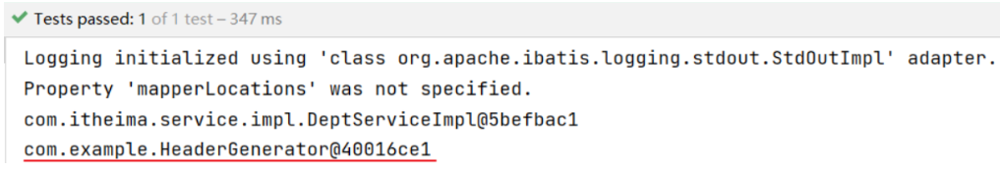
方案三.
使用@Import导入ImportSelector接口实现类：
然后使用 Import 实现注入类
- ImportSelector接口实现类
public class MyImportSelector implements ImportSelector {
public String[] selectImports(AnnotationMetadata importingClassMetadata) {
//返回值字符串数组（数组中封装了全限定名称的类）
return new String[]{"com.example.HeaderConfig"};
}
}
- 启动类
@Import(MyImportSelector.class) //导入ImportSelector接口实现类
@SpringBootApplication
public class SpringbootWebConfig2Application {
public static void main(String[] args) {
SpringApplication.run(SpringbootWebConfig2Application.class, args);
}
}
执行测试方法：

我们使用@Import注解通过这三种方式都可以导入第三方依赖中所提供的bean或者是配置类。
思考：如果基于以上方式完成自动配置，当要引入一个第三方依赖时，是不是还要知道第三方依赖中有哪些配置类和哪些Bean对象？
- 答案：是的。 （对程序员来讲，很不友好，而且比较繁琐）
思考：当我们要使用第三方依赖，依赖中到底有哪些bean和配置类，谁最清楚？
- 答案：第三方依赖自身最清楚。
结论：我们不用自己指定要导入哪些bean对象和配置类了，让第三方依赖它自己来指定。
怎么让第三方依赖自己指定bean对象和配置类？
- 比较常见的方案就是第三方依赖给我们提供一个注解，这个注解一般都以@EnableXxxx开头的注解，注解中封装的就是@Import注解
方案四
就是在方案三 (创建了总共的配置类, 然后将总共的配置类使用 import注释到 启动类中去 ) 的基础上, 使用了一个 @interface 类, 这个类 又放入了很多的 import注释方法, 最后使用注释 实现注入到 启动类中去
// 第1步：创建 ImportSelector 接口的实现类
public class MyImportSelector implements ImportSelector {
@Override
public String[] selectImports(...) {
// 返回要导入的配置类
return new String[]{"com.example.HeaderConfig"};
}
}
// 第2步：创建配置类，里面定义一堆 Bean
@Configuration
public class HeaderConfig {
@Bean
public HeaderParser headerParser() { return new HeaderParser(); }
@Bean
public HeaderGenerator headerGenerator() { return new HeaderGenerator(); }
}
// 第3步：创建注解，封装 @Import
@Target(ElementType.TYPE)
@Retention(RetentionPolicy.RUNTIME)
@Import(MyImportSelector.class) // ← 关键：把 Import 包进来
public @interface EnableHeaderConfig {
}
// 第4步：启动类上只需一个注解
@SpringBootApplication
@EnableHeaderConfig // ← 一个注解搞定一切
public class Application {
public static void main(String[] args) {
SpringApplication.run(Application.class, args);
}
}
使用第三方依赖提供的 @EnableXxxxx注解
创建接口类. 然后添加@Retention(RetentionPolicy.RUNTIME)
@Target(ElementType.TYPE ) 实现可以注解化 的类 ;
- 第三方依赖中提供的注解
@Retention(RetentionPolicy.RUNTIME)
@Target(ElementType.TYPE)
@Import(MyImportSelector.class)//指定要导入哪些bean对象或配置类
public @interface EnableHeaderConfig {
}
- 在使用时只需在启动类上加上@EnableXxxxx注解即可
@EnableHeaderConfig //使用第三方依赖提供的Enable开头的注解
@SpringBootApplication
public class SpringbootWebConfig2Application {
public static void main(String[] args) {
SpringApplication.run(SpringbootWebConfig2Application.class, args);
}
}
执行测试方法：
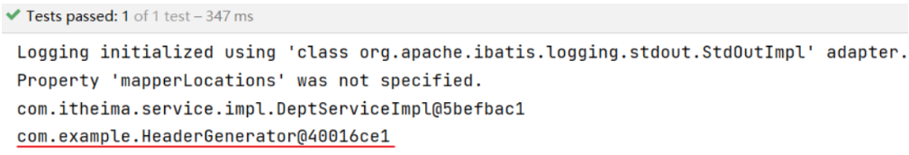
以上四种方式都可以完成导入操作，但是第4种方式会更方便更优雅，而这种方式也是SpringBoot当中所采用的方式。
普通注解 = 只是标记（如 @LogOperation）之前使用 AOP 的时候, 标记需要切入的方法的注释 ;
特殊注解 = 标记 + 内部有 @Import（如 @EnableHeaderConfig）
启动类有 @EnableHeaderConfig 由于启动类中标记这个 就会让项目 去找内部实现的注释 有无 @import , 实现注入 ;
源码跟踪
入口：@SpringBootApplication
开始源码追踪:相当无聊, 看了三遍了都, 睡了两遍
@Target({ElementType.TYPE})
@Retention(RetentionPolicy.RUNTIME)
@Documented
@Inherited
//上面的都是原注解,修饰注解用的,不管
@SpringBootConfiguration
@EnableAutoConfiguration
@ComponentScan(
excludeFilters = {@Filter(
type = FilterType.CUSTOM,
classes = {TypeExcludeFilter.class}
), @Filter(
type = FilterType.CUSTOM,
classes = {AutoConfigurationExcludeFilter.class}
)}
)
下一位 : @SpringBootConfiguration 配置类(可放入普通类 + Bean对象)
@Target({ElementType.TYPE})
@Retention(RetentionPolicy.RUNTIME)
@Documented
@Configuration //主要就看这一个,有这个就是一个配置类
@Indexed
下一位 : @EnableAutoConfiguration 等会再说, 有点困了
首先这里的 Enable表示开启 xxx 的开关 ; 最主要内部import 了一个 AutoConfig文件 ;
也是一个接口实现配置类, 底层是实现了Selector这个接口,我就不展示了
只要实现这个接口就是批量导入 --> 目标明确: 直接去找内部创建 的SelectImports 方法怎么实现的
@Target(ElementType.TYPE)
@Retention(RetentionPolicy.RUNTIME)
@Documented
@Inherited
@AutoConfigurationPackage
@Import(AutoConfigurationImportSelector.class)
public @interface EnableAutoConfiguration {
实现的内部 的 selectImport 返回的值 ;
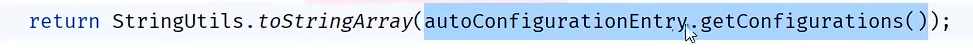
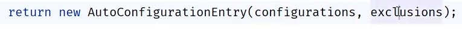
返回的两个类 : 一个决定注入什么 , 一个决定排除什么
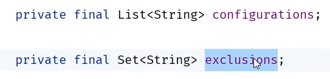
内部实现的一个断言操作 :
目的地 :
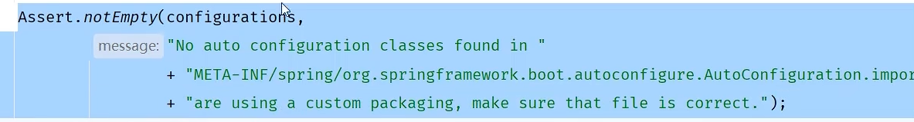
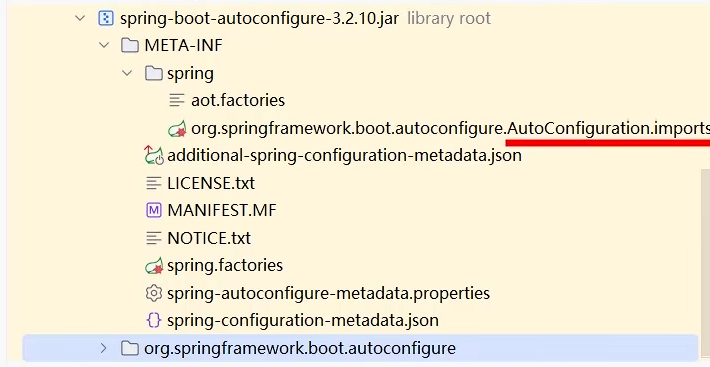
下一位 : @ComponentScan 组件扫描器
保证了原启动类, 只扫描启动类所在包和子包
注意一旦重写了,内部之前实现的范围就丢了.....
会在组件扫描器的范围内查找标记注入IOC容器的类,后面可以自动注入
// 这些注解会被识别
@Component
@Service
@Controller
@Repository
@Configuration
// 以及这些注解的派生注解
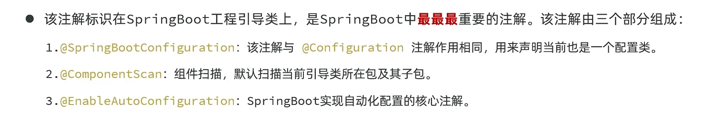
原理分析
源码跟踪
前面我们讲解了在项目当中引入第三方依赖之后，如何加载第三方依赖中定义好的bean对象以及配置类，从而完成自动配置操作。那下面我们通过源码跟踪的形式来剖析下SpringBoot底层到底是如何完成自动配置的。
源码跟踪技巧：
在跟踪框架源码的时候，一定要抓住关键点，找到核心流程。一定不要从头到尾一行代码去看，一个方法的去研究，一定要找到关键流程，抓住关键点，先在宏观上对整个流程或者整个原理有一个认识，有精力再去研究其中的细节。
要搞清楚SpringBoot的自动配置原理，要从SpringBoot启动类上使用的核心注解@SpringBootApplication开始分析：
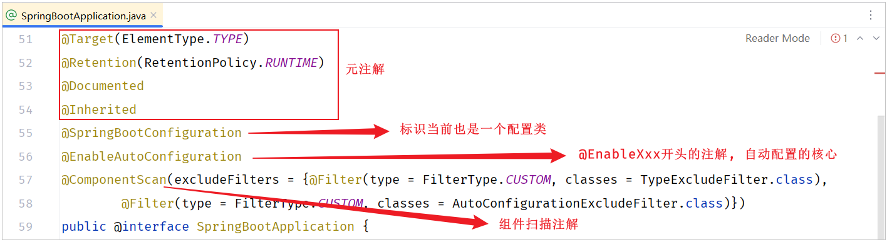
在@SpringBootApplication注解中包含了：
- 元注解（不再解释）
@SpringBootConfiguration@EnableAutoConfiguration@ComponentScan- 我们先来看第一个注解：
@SpringBootConfiguration
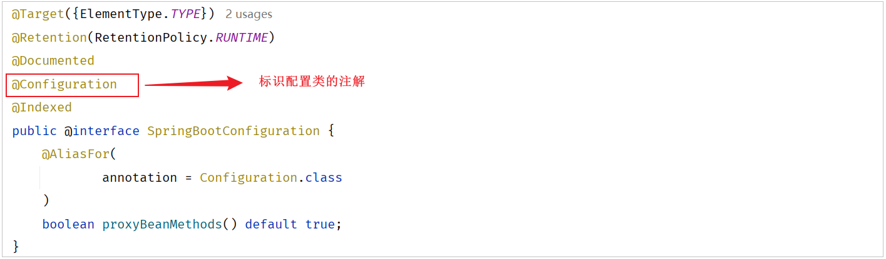
@SpringBootConfiguration注解上使用了@Configuration，表明SpringBoot启动类就是一个配置类。
@Indexed注解，是用来加速应用启动的（不用关心）。
- 接下来再先看
@ComponentScan注解：
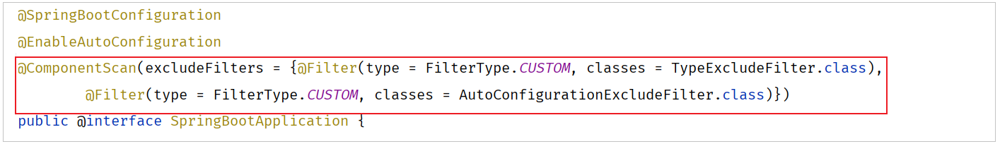
@ComponentScan注解是用来进行组件扫描的，扫描启动类所在的包及其子包下所有被@Component及其衍生注解声明的类。
SpringBoot启动类，之所以具备扫描包功能，就是因为包含了@ComponentScan注解。
- 最后我们来看看
@``Enable``AutoConfiguration注解（自动配置核心注解）：
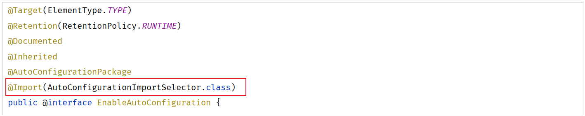
使用@Import注解，导入了实现ImportSelector接口的实现类。
AutoConfigurationImportSelector类是ImportSelector接口的实现类。
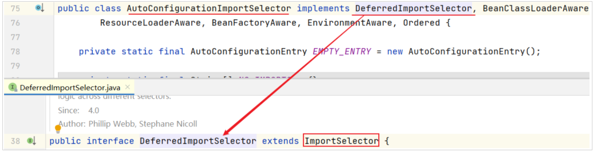
AutoConfigurationImportSelector类中重写了ImportSelector接口的selectImports()方法：
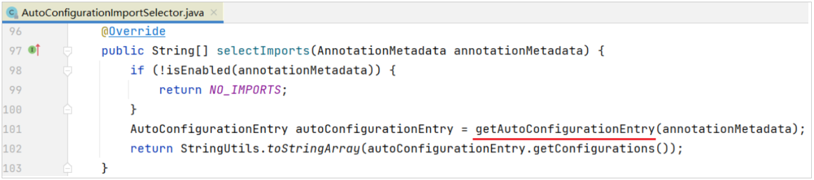
selectImports()方法底层调用getAutoConfigurationEntry()方法，获取可自动配置的配置类信息集合
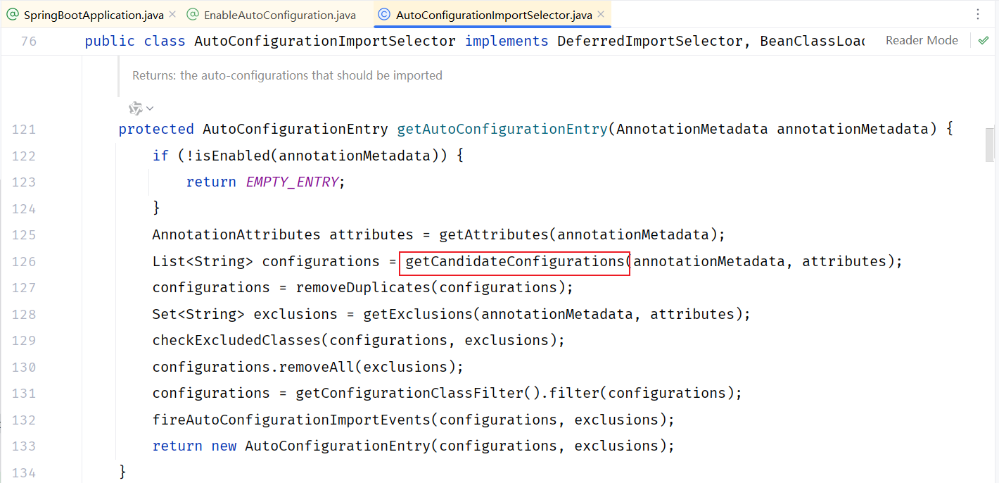
getAutoConfigurationEntry()方法通过调用getCandidateConfigurations(annotationMetadata, attributes)方法获取在配置文件中配置的所有自动配置类的集合
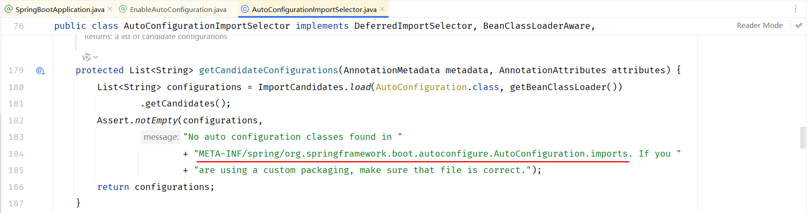
getCandidateConfigurations方法的功能：
获取所有基于 META-INF/spring/org.springframework.boot.autoconfigure.AutoConfiguration.imports文件中配置类的集合
META-INF/spring/org.springframework.boot.autoconfigure.AutoConfiguration.imports文件这两个文件在哪里呢？
- 通常在引入的起步依赖中，都有包含以上文件
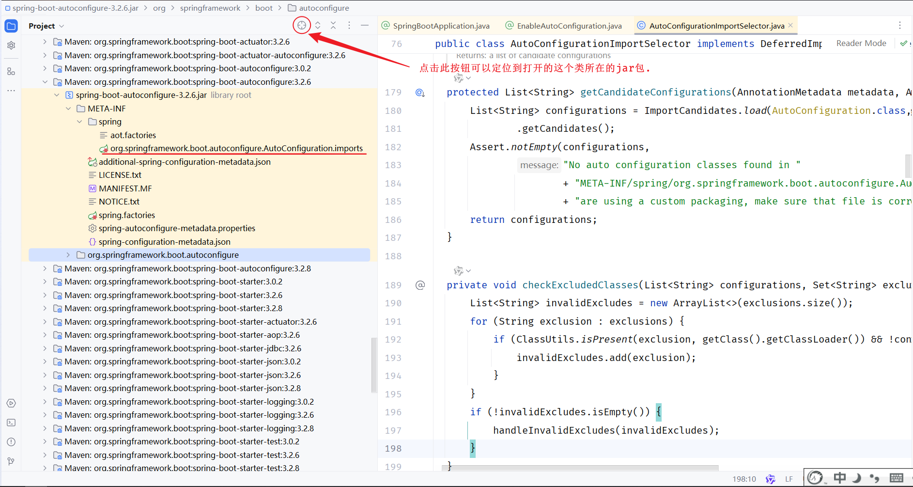
在前面在给大家演示自动配置的时候，我们直接在测试类当中注入了一个叫gson的bean对象，进行JSON格式转换。虽然我们没有配置bean对象，但是我们是可以直接注入使用的。原因就是因为在自动配置类当中做了自动配置。到底是在哪个自动配置类当中做的自动配置呢？我们通过搜索来查询一下。
在META-INF/spring/org.springframework.boot.autoconfigure.AutoConfiguration.imports 配置文件中指定了第三方依赖Gson的配置类：GsonAutoConfiguration
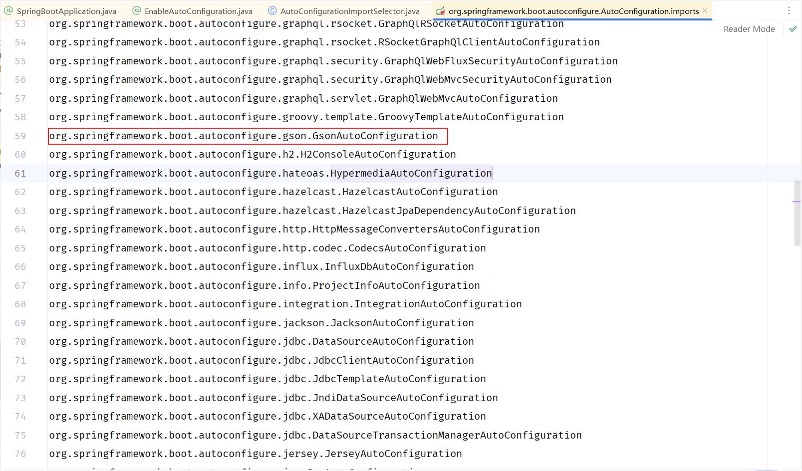
打开上面的第三方依赖中提供的 GsonAutoConfiguration类：
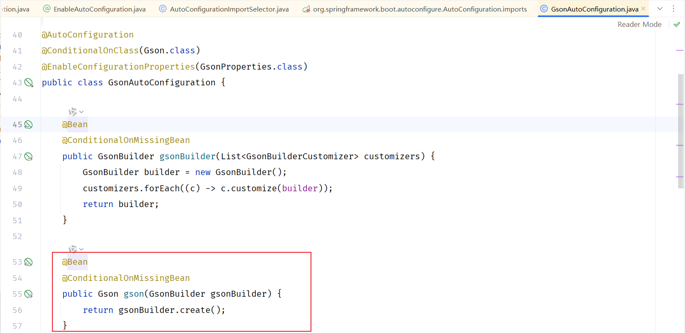
在GsonAutoConfiguration类上，添加了注解@AutoConfiguration，通过查看源码，可以明确：GsonAutoConfiguration 类是一个配置。
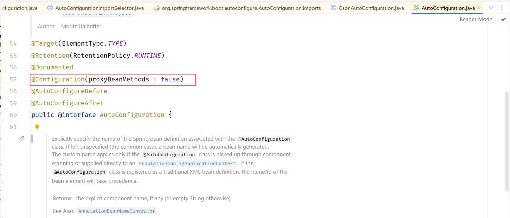
看到这里，大家就应该明白为什么可以完成自动配置了，原理就是在配置类中定义一个@Bean标识的方法，而Spring会自动调用配置类中使用@Bean标识的方法，并把方法的返回值注册到IOC容器中。
步骤 | 做什么 | 代码 | 作用 |
1 | 普通类 |
| 真正的业务代码 |
2 | 配置类 |
+ | 把普通类包装成 Bean |
3 | ImportSelector |
| 指定要导入哪些配置类 |
4 | 自定义注解 |
+ | 把 ImportSelector 包进去 |
5 | 启动类 |
| 一个注解开启所有功能 |
6 | Controller |
| 直接使用注入的 Bean |
自动配置源码小结
自动配置原理源码入口就是 @SpringBootApplication 注解，在这个注解中封装了3个注解，分别是：
@SpringBootConfiguration
声明当前类是一个配置类
@ComponentScan
进行组件扫描（SpringBoot中默认扫描的是启动类所在的当前包及其子包）
@EnableAutoConfiguration
封装了@Import注解（Import注解中指定了一个ImportSelector接口的实现类）
在实现类重写的selectImports()方法，读取当前项目下所有依赖jar包中META-INF/spring/org.springframework.boot.autoconfigure.AutoConfiguration.imports两个文件里面定义的配置类（配置类中定义了@Bean注解标识的方法）。
当SpringBoot程序启动时，就会加载配置文件当中所定义的配置类，并将这些配置类信息(类的全限定名)封装到String类型的数组中，最终通过@Import注解将这些配置类全部加载到Spring的IOC容器中，交给IOC容器管理。
最后呢给大家抛出一个问题：在 META-INF/spring/org.springframework.boot.autoconfigure.AutoConfiguration.imports 文件中定义的配置类非常多，而且每个配置类中又可以定义很多的bean，那这些bean都会注册到Spring的IOC容器中吗？
答案：并不是。 在声明bean对象时，上面有加一个以 @Conditional 开头的注解，这种注解的作用就是按照条件进行装配，只有满足条件之后，才会将bean注册到Spring的IOC容器中（下面会详细来讲解）
@Conditional
可以创键再方法上 ,也可以创建再类上 ;
方法上是实现 方法创建出来的对象, 类上就是简单的类注入 ;
我们在跟踪SpringBoot自动配置的源码的时候，在自动配置类声明bean的时候，除了在方法上加了一个@Bean注解以外，还会经常用到一个注解，就是以Conditional开头的这一类的注解。以Conditional开头的这些注解都是条件装配的注解。下面我们就来介绍下条件装配注解。
@Conditional注解：
作用：按照一定的条件进行判断，在满足给定条件后才会注册对应的bean对象到Spring的IOC容器中。
位置：方法、类
@Conditional本身是一个父注解，派生出大量的子注解：
@ConditionalOnClass：判断环境中有对应字节码文件 , 包名，才注册bean到IOC容器。
@ConditionalOnMissingBean：判断环境中没有对应的bean(类型或名称{默认找的是名称})[对应的条件]，才注册bean到IOC容器。
@ConditionalOnProperty：判断配置文件中有对应属性和值，才注册bean到IOC容器。
下面我们通过代码来演示下Conditional注解的使用：
@ConditionalOnClass注解
@Configuration
public class HeaderConfig {
@Bean
@ConditionalOnClass(name="io.jsonwebtoken.Jwts")//环境中存在指定的这个类，才会将该bean加入IOC容器
public HeaderParser headerParser(){
return new HeaderParser();
}
//省略其他代码...
}
- pom.xml
<!--JWT令牌-->
<dependency>
<groupId>io.jsonwebtoken</groupId>
<artifactId>jjwt</artifactId>
<version>0.9.1</version>
</dependency>
- 测试类
@SpringBootTest
public class AutoConfigurationTests {
@Autowired
private ApplicationContext applicationContext;
@Test
public void testHeaderParser(){
System.out.println(applicationContext.getBean(HeaderParser.class));
}
//省略其他代码...
}
执行testHeaderParser()测试方法：
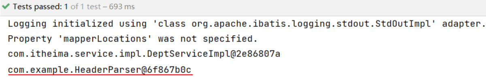
因为 io.jsonwebtoken.Jwts 字节码文件在启动SpringBoot程序时已存在，所以创建HeaderParser对象并注册到IOC容器中。
- @ConditionalOnMissingBean注解
@Configuration
public class HeaderConfig {
@Bean
@ConditionalOnMissingBean //不存在该类型的bean，才会将该bean加入IOC容器
public HeaderParser headerParser(){
return new HeaderParser();
}
//省略其他代码...
}
执行testHeaderParser()测试方法：
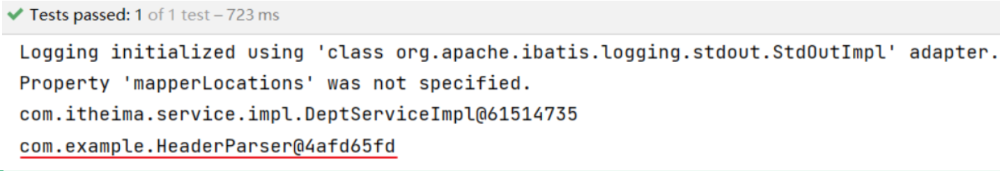
SpringBoot在调用@Bean标识的headerParser()前，IOC容器中是没有HeaderParser类型的bean，所以HeaderParser对象正常创建，并注册到IOC容器中。
- 再次修改@ConditionalOnMissingBean注解
@Configuration
public class HeaderConfig {
@Bean
@ConditionalOnMissingBean//不存在指定类型的bean，才会将该bean加入IOC容器
public HeaderParser headerParser(){
return new HeaderParser();
}
//省略其他代码...
}
执行testHeaderParser()测试方法：
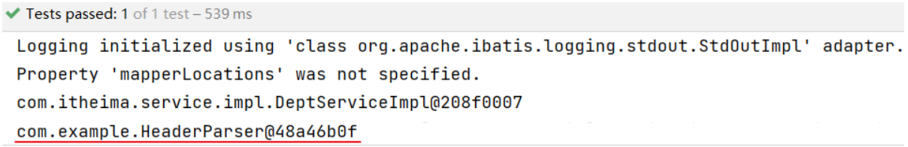
@ConditionalOnProperty注解（这个注解和配置文件当中配置的属性有关系）
先在application.yml配置文件中添加如下的键值对：
name: itheima
在声明bean的时候就可以指定一个条件@ConditionalOnProperty
@Configuration
public class HeaderConfig {
@Bean
@ConditionalOnProperty(name ="name",havingValue = "itheima")//配置文件中存在指定属性名与值，才会将bean加入IOC容器
public HeaderParser headerParser(){
return new HeaderParser();
}
@Bean
public HeaderGenerator headerGenerator(){
return new HeaderGenerator();
}
}
执行testHeaderParser()测试方法：
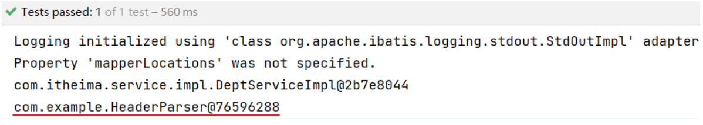
修改@ConditionalOnProperty注解： havingValue的值修改为"itheima2"
@Bean
@ConditionalOnProperty(name ="name",havingValue = "itheima2")//配置文件中存在指定属性名与值，才会将bean加入IOC容器
public HeaderParser headerParser(){
return new HeaderParser();
}
再次执行testHeaderParser()测试方法：
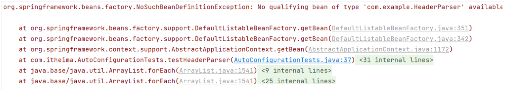
因为 application.yml 配置文件中，不存在： name: itheima2，所以HeaderParser对象在IOC容器中不存在
我们再回头看看之前讲解SpringBoot源码时提到的一个配置类：GsonAutoConfiguration
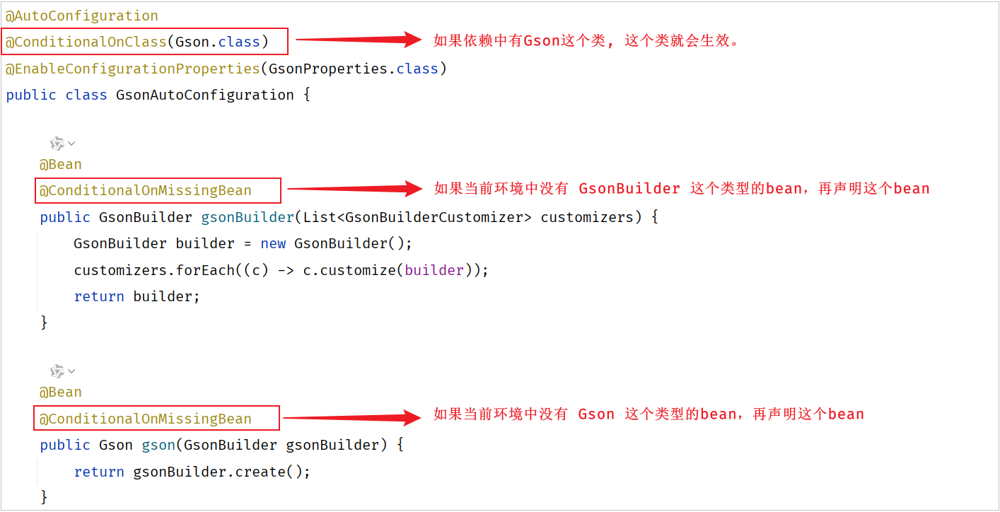
最后再给大家梳理一下自动配置原理：
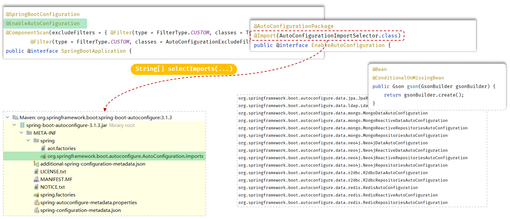
自动配置的核心就在@SpringBootApplication注解上，SpringBootApplication这个注解底层包含了3个注解，分别是：
- @SpringBootConfiguration
- @ComponentScan
- @EnableAutoConfiguration
@EnableAutoConfiguration这个注解才是自动配置的核心。
- 它封装了一个@Import注解，Import注解里面指定了一个ImportSelector接口的实现类。
- 在这个实现类中，重写了ImportSelector接口中的selectImports()方法。
- 而selectImports()方法中会去读取两份配置文件，并将配置文件中定义的配置类做为selectImports()方法的返回值返回，返回值代表的就是需要将哪些类交给Spring的IOC容器进行管理。
- 那么所有自动配置类的中声明的bean都会加载到Spring的IOC容器中吗? 其实并不会，因为这些配置类中在声明bean时，通常都会添加@Conditional开头的注解，这个注解就是进行条件装配。而Spring会根据Conditional注解有选择性的进行bean的创建。
- @Enable 开头的注解底层，它就封装了一个注解 import 注解，它里面指定了一个类，是 ImportSelector 接口的实现类。在实现类当中，我们需要去实现 ImportSelector 接口当中的一个方法 selectImports 这个方法。这个方法的返回值代表的就是我需要将哪些类交给 spring 的 IOC容器进行管理。
- 此时它会去读取两份配置文件，一份儿是 spring.factories，另外一份儿是 autoConfiguration.imports。而在 autoConfiguration.imports 这份儿文件当中，它就会去配置大量的自动配置的类。
- 而前面我们也提到过这些所有的自动配置类当中，所有的 bean都会加载到 spring 的 IOC 容器当中吗？其实并不会，因为这些配置类当中，在声明 bean 的时候，通常会加上这么一类@Conditional 开头的注解。这个注解就是进行条件装配。所以SpringBoot非常的智能，它会根据 @Conditional 注解来进行条件装配。只有条件成立，它才会声明这个bean，才会将这个 bean 交给 IOC 容器管理。
自定义starter
分析
前面我们解析了SpringBoot中自动配置的原理，下面我们就通过一个自定义starter案例来加深大家对于自动配置原理的理解。首先介绍一下自定义starter的业务场景，再来分析一下具体的操作步骤。
所谓starter指的就是SpringBoot当中的起步依赖。在SpringBoot当中已经给我们提供了很多的起步依赖了，我们为什么还需要自定义 starter 起步依赖？
这是因为在实际的项目开发当中，我们可能会用到很多第三方的技术，并不是所有的第三方的技术官方都给我们提供了与SpringBoot整合的starter起步依赖，但是这些技术又非常的通用，在很多项目组当中都在使用。
业务场景：
- 我们前面案例当中所使用的阿里云OSS对象存储服务，现在阿里云的官方是没有给我们提供对应的起步依赖的，这个时候使用起来就会比较繁琐，我们需要引入对应的依赖。我们还需要在配置文件当中进行配置，还需要基于官方SDK示例来改造对应的工具类，我们在项目当中才可以进行使用。
- 大家想在我们当前项目当中使用了阿里云OSS，我们需要进行这么多步的操作。在别的项目组当中要想使用阿里云OSS，是不是也需要进行这么多步的操作，所以这个时候我们就可以自定义一些公共组件，在这些公共组件当中，我就可以提前把需要配置的bean都提前配置好。将来在项目当中，我要想使用这个技术，我直接将组件对应的坐标直接引入进来，就已经自动配置好了，就可以直接使用了。我们也可以把公共组件提供给别的项目组进行使用，这样就可以大大的简化我们的开发。
在SpringBoot项目中，一般都会将这些公共组件封装为SpringBoot当中的starter，也就是我们所说的起步依赖。
而在springboot中，官方提供的起步依赖 或 第三方提供的起步依赖，基本都会包含两个模块，如下所示：
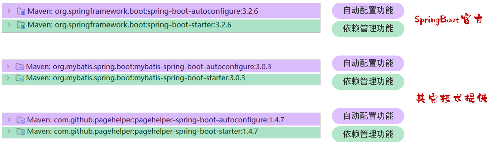
其中，spring-boot-starter 或 xxx-spring-boot-starter 这个模块主要是依赖管理的功能。 而 spring-boot-autoconfigure 或 xxxx-spring-boot-autoconfigure 主要是起到自动配置的作用，自动配置的核心代码就在这个模块中编写。
SpringBoot官方starter命名： spring-boot-starter-xxxx
第三组织提供的starter命名： xxxx-spring-boot-starter
而自动配置模块的核心，就是编写自动配置的核心代码，然后将自动配置的核心类，配置在核心的配置文件 META-INF/spring/org.springframework.boot.autoconfigure.AutoConfiguration.imports 中。 配置如下：

SpringBoot官方的自动配置依赖 spring-boot-autoconfiure 中就提供了配置类，并且也提供了springboot会自动读取的配置文件。当SpringBoot项目启动时，会读取到META-INF/spring/org.springframework.boot.autoconfigure.AutoConfiguration.imports配置文件中的配置类并加载配置类，生成相关bean对象注册到IOC容器中。
结果：我们可以直接在SpringBoot程序中使用自动配置的bean对象。
在自定义一个起步依赖starter的时候，按照规范需要定义两个模块：
- starter模块（进行依赖管理[把程序开发所需要的依赖都定义在starter起步依赖中]）
- autoconfigure模块（自动配置）
将来在项目当中进行相关功能开发时，只需要引入一个起步依赖就可以了，因为它会将autoconfigure自动配置的依赖给传递下来。
需求
上面我们简单介绍了自定义starter的场景，以及自定义starter时涉及到的模块之后，接下来我们就来完成一个自定义starter的案例。
- 需求：自定义
aliyun-oss-spring-boot-starter，完成阿里云OSS操作工具类AliyunOSSOperator的自动配置。 - 目标：引入起步依赖引入之后，要想使用阿里云OSS，注入
AliyunOSSOperator直接使用即可。
之前我们的用法：
1). 在pom.xml中引入阿里云oss的所有依赖
<!--阿里云OSS-->
<dependency>
<groupId>com.aliyun.oss</groupId>
<artifactId>aliyun-sdk-oss</artifactId>
<version>3.17.4</version>
</dependency>
<dependency>
<groupId>javax.xml.bind</groupId>
<artifactId>jaxb-api</artifactId>
<version>2.3.1</version>
</dependency>
<dependency>
<groupId>javax.activation</groupId>
<artifactId>activation</artifactId>
<version>1.1.1</version>
</dependency>
<!-- no more than 2.3.3-->
<dependency>
<groupId>org.glassfish.jaxb</groupId>
<artifactId>jaxb-runtime</artifactId>
<version>2.3.3</version>
</dependency>
2). application.yml 中配置阿里云OSS的配置信息
#阿里云oss配置
aliyun:
oss:
endpoint: https://oss-cn-beijing.aliyuncs.com
bucketName: java422-web-ai
3). 定义实体类封装配置信息
package com.itheima.utils;
import lombok.Data;
import org.springframework.boot.context.properties.ConfigurationProperties;
import org.springframework.stereotype.Component;
@Data
@Component
@ConfigurationProperties(prefix = "aliyun.oss")
public class AliyunOSSProperties {
private String endpoint;
private String bucketName;
}
4). 定义工具类AliyunOSSOperator
package com.itheima.utils;
import com.aliyun.oss.OSS;
import com.aliyun.oss.OSSClientBuilder;
import com.aliyun.oss.common.auth.CredentialsProviderFactory;
import com.aliyun.oss.common.auth.EnvironmentVariableCredentialsProvider;
import com.aliyun.oss.model.OSSObjectSummary;
import com.aliyun.oss.model.ObjectListing;
import org.springframework.beans.factory.annotation.Autowired;
import org.springframework.stereotype.Component;
import java.io.ByteArrayInputStream;
import java.time.LocalDate;
import java.time.format.DateTimeFormatter;
import java.util.List;
import java.util.UUID;
import java.util.stream.Collectors;
@Component
public class AliyunOSSOperator {
@Autowired
private AliyunOSSProperties aliyunOSSProperties;
/**
* 文件上传
*/
public String upload(byte[] content, String originalFilename) throws Exception {
String endpoint = aliyunOSSProperties.getEndpoint();
String bucketName = aliyunOSSProperties.getBucketName();
// 从环境变量中获取访问凭证。运行本代码示例之前，请确保已设置环境变量OSS_ACCESS_KEY_ID和OSS_ACCESS_KEY_SECRET。
EnvironmentVariableCredentialsProvider credentialsProvider = CredentialsProviderFactory.newEnvironmentVariableCredentialsProvider();
// 填写Object完整路径，例如202406/1.png。Object完整路径中不能包含Bucket名称。
//获取当前系统日期的字符串,格式为 yyyy/MM
String dir = LocalDate.now().format(DateTimeFormatter.ofPattern("yyyy/MM"));
//根据原始文件名originalFilename, 生成一个新的不重复的文件名
String newFileName = UUID.randomUUID().toString() + originalFilename.substring(originalFilename.lastIndexOf("."));
String objectName = dir + "/" + newFileName;
// 创建OSSClient实例。
OSS ossClient = new OSSClientBuilder().build(endpoint, credentialsProvider);
//文件上传
try {
ossClient.putObject(bucketName, objectName, new ByteArrayInputStream(content));
} finally {
if (ossClient != null) {
ossClient.shutdown();
}
}
return endpoint.split("//")[0] + "//" + bucketName + "." + endpoint.split("//")[1] + "/" + objectName;
}
/**
* 查询文件列表
*/
public List<String> listFiles() throws Exception {
String endpoint = aliyunOSSProperties.getEndpoint();
String bucketName = aliyunOSSProperties.getBucketName();
// 从环境变量中获取访问凭证。运行本代码示例之前，请确保已设置环境变量OSS_ACCESS_KEY_ID和OSS_ACCESS_KEY_SECRET。
EnvironmentVariableCredentialsProvider credentialsProvider = CredentialsProviderFactory.newEnvironmentVariableCredentialsProvider();
// 指定前缀，例如exampledir/object。
String keyPrefix = null;
// 创建OSSClient实例。
OSS ossClient = new OSSClientBuilder().build(endpoint, credentialsProvider);
try {
// 列举文件。如果不设置keyPrefix，则列举存储空间下的所有文件。如果设置keyPrefix，则列举包含指定前缀的文件。
ObjectListing objectListing = ossClient.listObjects(bucketName, keyPrefix);
List<OSSObjectSummary> sums = objectListing.getObjectSummaries();
if(sums != null && !sums.isEmpty()){
return sums.stream().map(OSSObjectSummary::getKey).collect(Collectors.toList());
}
} finally {
if (ossClient != null) {
ossClient.shutdown();
}
}
return null;
}
/**
* 删除指定对象
*/
public void deleteFile(String objectName) throws Exception {
String endpoint = aliyunOSSProperties.getEndpoint();
String bucketName = aliyunOSSProperties.getBucketName();
// 从环境变量中获取访问凭证。运行本代码示例之前，请确保已设置环境变量OSS_ACCESS_KEY_ID和OSS_ACCESS_KEY_SECRET。
EnvironmentVariableCredentialsProvider credentialsProvider = CredentialsProviderFactory.newEnvironmentVariableCredentialsProvider();
// 创建OSSClient实例。
OSS ossClient = new OSSClientBuilder().build(endpoint, credentialsProvider);
try {
// 删除文件或目录。如果要删除目录，目录必须为空。
ossClient.deleteObject(bucketName, objectName);
} finally {
if (ossClient != null) {
ossClient.shutdown();
}
}
}
}
5). 其他地方要使用阿里云OSS，注入工具类，再使用
@Slf4j
@RestController
public class UploadController {
@Autowired
private AliyunOSSOperator aliyunOSSOperator;
/**
* 文件上传
*/
@PostMapping("/upload")
public Result upload(MultipartFile file) throws Exception {
log.info("上传文件：{}",file.getOriginalFilename());
//调用aliyun OSS进行文件上传
String url = aliyunOSSOperator.upload(file.getBytes(), file.getOriginalFilename());
//返回结果
return Result.success(url);
}
}
我们可以看到，在项目中使用阿里云OSS，需要这么五步操作，而阿里云OSS这个云服务还是非常常见的，很多项目中都要使用。
大家再思考，现在我们使用阿里云OSS，需要做这么几步，将来大家在开发其他的项目的时候，你使用阿里云OSS，这几步你要不要做？当团队中其他小伙伴也在使用阿里云OSS的时候，步骤 不也是一样的。
所以这个时候我们就可以制作一个公共组件(自定义starter)。starter定义好之后，将来要使用阿里云OSS进行文件上传，只需要将起步依赖引入进来之后，就可以直接注入 AliyunOSSOperator 使用了。
实现
需求明确了，接下来我们再来分析一下具体的实现步骤：
第1步：创建自定义starter模块
aliyun-oss-spring-boot-starter（进行依赖管理）把阿里云OSS所有的依赖统一管理起来
第2步：创建autoconfigure模块
aliyun-oss-spring-boot-autoconfigure在starter中引入autoconfigure （我们使用时只需要引入starter起步依赖即可）
第3步：在autoconfigure模块
aliyun-oss-spring-boot-autoconfigure中完成自动配置定义一个自动配置类，在自动配置类中将所要配置的bean都提前配置好
定义配置文件，把自动配置类的全类名定义在配置文件(
META-INF/spring/xxxx.imports)中
我们分析完自定义阿里云OSS自动配置的操作步骤了，下面我们就按照分析的步骤来实现自定义starter。
首先我们先来创建两个Maven模块：
1). 创建 aliyun-oss-spring-boot-starter
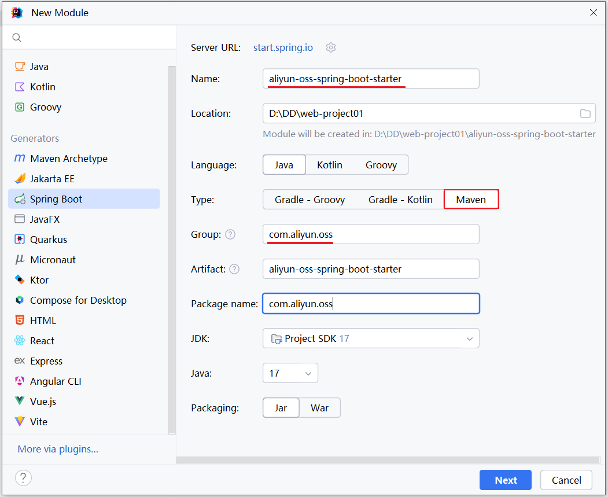
选择springboot的版本，不需要勾选任何的依赖。直接点击 create 创建项目。
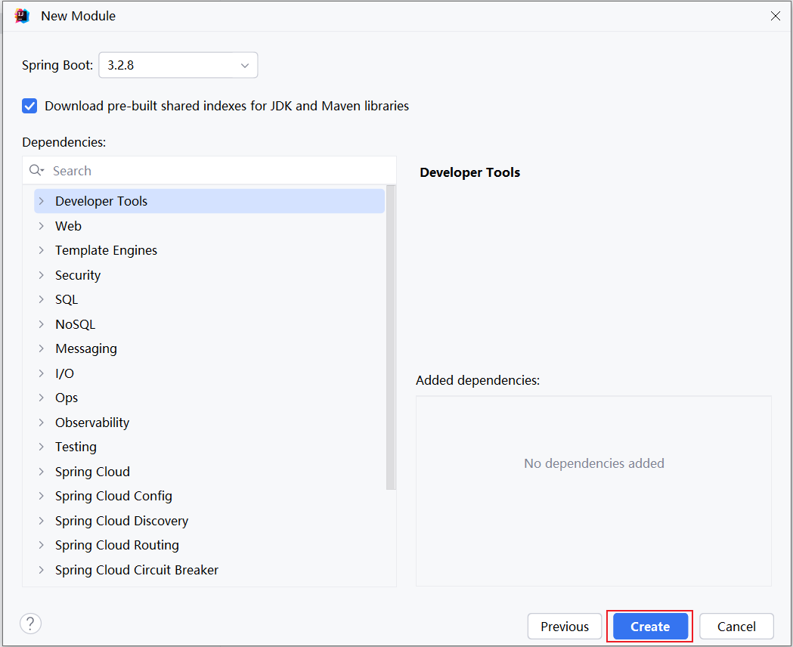
创建完starter模块后，删除多余的文件，只保留一个pom.xml文件。最终保留内容如下：
pom.xml 中的配置如下:
<?xml version="1.0" encoding="UTF-8"?>
<project xmlns="http://maven.apache.org/POM/4.0.0" xmlns:xsi="http://www.w3.org/2001/XMLSchema-instance"
xsi:schemaLocation="http://maven.apache.org/POM/4.0.0 https://maven.apache.org/xsd/maven-4.0.0.xsd">
<modelVersion>4.0.0</modelVersion>
<parent>
<groupId>org.springframework.boot</groupId>
<artifactId>spring-boot-starter-parent</artifactId>
<version>3.2.8</version>
<relativePath/> <!-- lookup parent from repository -->
</parent>
<groupId>com.aliyun.oss</groupId>
<artifactId>aliyun-oss-spring-boot-starter</artifactId>
<version>0.0.1-SNAPSHOT</version>
<properties>
<java.version>17</java.version>
</properties>
<dependencies>
<dependency>
<groupId>org.springframework.boot</groupId>
<artifactId>spring-boot-starter</artifactId>
</dependency>
</dependencies>
</project>
2). 创建 aliyun-oss-spring-boot-autoconfigure 模块
选择Springboot的版本，不用勾选任何依赖。
创建完starter模块后，删除多余的文件，只保留 src 和 pom.xml 。最终保留内容如下：
该模块的pom.xml内容如下：
<?xml version="1.0" encoding="UTF-8"?>
<project xmlns="http://maven.apache.org/POM/4.0.0" xmlns:xsi="http://www.w3.org/2001/XMLSchema-instance"
xsi:schemaLocation="http://maven.apache.org/POM/4.0.0 https://maven.apache.org/xsd/maven-4.0.0.xsd">
<modelVersion>4.0.0</modelVersion>
<parent>
<groupId>org.springframework.boot</groupId>
<artifactId>spring-boot-starter-parent</artifactId>
<version>3.2.8</version>
<relativePath/> <!-- lookup parent from repository -->
</parent>
<groupId>com.aliyun.oss</groupId>
<artifactId>aliyun-oss-spring-boot-autoconfigure</artifactId>
<version>0.0.1-SNAPSHOT</version>
<properties>
<java.version>17</java.version>
</properties>
<dependencies>
<dependency>
<groupId>org.springframework.boot</groupId>
<artifactId>spring-boot-starter</artifactId>
</dependency>
</dependencies>
</project>
按照我们之前的分析，是需要在starter模块中来引入autoconfigure这个模块的。打开starter模块中的pom文件：
<?xml version="1.0" encoding="UTF-8"?>
<project xmlns="http://maven.apache.org/POM/4.0.0" xmlns:xsi="http://www.w3.org/2001/XMLSchema-instance"
xsi:schemaLocation="http://maven.apache.org/POM/4.0.0 https://maven.apache.org/xsd/maven-4.0.0.xsd">
<modelVersion>4.0.0</modelVersion>
<parent>
<groupId>org.springframework.boot</groupId>
<artifactId>spring-boot-starter-parent</artifactId>
<version>3.2.8</version>
<relativePath/> <!-- lookup parent from repository -->
</parent>
<groupId>com.aliyun.oss</groupId>
<artifactId>aliyun-oss-spring-boot-starter</artifactId>
<version>0.0.1-SNAPSHOT</version>
<properties>
<java.version>17</java.version>
</properties>
<dependencies>
<dependency>
<groupId>org.springframework.boot</groupId>
<artifactId>spring-boot-starter</artifactId>
</dependency>
<dependency>
<groupId>com.aliyun.oss</groupId>
<artifactId>aliyun-oss-spring-boot-autoconfigure</artifactId>
<version>0.0.1-SNAPSHOT</version>
</dependency>
</dependencies>
</project>
前两步已经完成了，接下来是最关键的就是第三步：在aliyun-oss-spring-boot-autoconfigure模块当中来完成自动配置操作。
我们将之前案例中所使用的阿里云OSS部分的代码直接拷贝到autoconfigure模块下，然后进行改造就行了。
拷贝过来后，还缺失一些相关的依赖，需要把相关依赖也拷贝过来：
<?xml version="1.0" encoding="UTF-8"?>
<project xmlns="http://maven.apache.org/POM/4.0.0" xmlns:xsi="http://www.w3.org/2001/XMLSchema-instance"
xsi:schemaLocation="http://maven.apache.org/POM/4.0.0 https://maven.apache.org/xsd/maven-4.0.0.xsd">
<modelVersion>4.0.0</modelVersion>
<parent>
<groupId>org.springframework.boot</groupId>
<artifactId>spring-boot-starter-parent</artifactId>
<version>3.2.8</version>
<relativePath/> <!-- lookup parent from repository -->
</parent>
<groupId>com.aliyun.oss</groupId>
<artifactId>aliyun-oss-spring-boot-autoconfigure</artifactId>
<version>0.0.1-SNAPSHOT</version>
<properties>
<java.version>17</java.version>
</properties>
<dependencies>
<dependency>
<groupId>org.springframework.boot</groupId>
<artifactId>spring-boot-starter</artifactId>
</dependency>
<dependency>
<groupId>org.projectlombok</groupId>
<artifactId>lombok</artifactId>
</dependency>
<!--阿里云OSS-->
<dependency>
<groupId>com.aliyun.oss</groupId>
<artifactId>aliyun-sdk-oss</artifactId>
<version>3.17.4</version>
</dependency>
<dependency>
<groupId>javax.xml.bind</groupId>
<artifactId>jaxb-api</artifactId>
<version>2.3.1</version>
</dependency>
<dependency>
<groupId>javax.activation</groupId>
<artifactId>activation</artifactId>
<version>1.1.1</version>
</dependency>
<!-- no more than 2.3.3-->
<dependency>
<groupId>org.glassfish.jaxb</groupId>
<artifactId>jaxb-runtime</artifactId>
<version>2.3.3</version>
</dependency>
</dependencies>
</project>
那此时，大家思考下，在类上添加的 @Component 注解还有用吗？
答案：没用了。 在SpringBoot项目中，并不会去扫描com.aliyun.oss这个包，不扫描这个包那类上的注解也就失去了作用。
@Component注解不需要使用了，可以从类上删除了。
1). 删除 AliyunOSSOperator 工具类上的 @Component 注解 和 @Autowired 注解。
2). 删除 AliyunOSSProperties 实体类上的 @Component 注解。
删除后报红色错误，暂时不理会，后面再来处理。
3). 既然不能用 @Component 注解声明bean，那就需要按照 starter 的定义规范，定义一个自动配置类，在自动配置类中声明bean。
下面我们就要定义一个自动配置类 AliOSSAutoConfiguration 了，在自动配置类当中来声明 AliOSSOperator 的bean对象。
具体代码如下：
package com.aliyun.oss;
import org.springframework.boot.context.properties.EnableConfigurationProperties;
import org.springframework.context.annotation.Bean;
import org.springframework.context.annotation.Configuration;
@Configuration
@EnableConfigurationProperties(AliyunOSSProperties.class)
public class AliyunOSSAutoConfiguration {
@Bean
public AliyunOSSOperator aliyunOSSOperator(AliyunOSSProperties aliyunOSSProperties) {
return new AliyunOSSOperator(aliyunOSSProperties);
}
}
AliyunOSSOperator 的代码中需要增加一个有参构造，将 AliyunOSSProperties 对象传递给工具类。代码改造如下：
4). 在 aliyun-oss-spring-boot-autoconfigure 模块中的resources下，新建自动配置文件 META-INF/spring/org.springframework.boot.autoconfigure.AutoConfiguration.imports
将自动配置类的全类名，配置在文件中，这样在springboot启动的时候，就会加载到这份文件，并加载到其中的配置类了。
配置内容如下：
以下是新版机制（AutoConfiguration.imports）与旧版机制（spring.factories）的详细对比：
特性 | 新版机制 (Spring Boot 2.7+ / 3.x) | 旧版机制 (Spring Boot 2.6 及以前) |
配置文件 |
|
|
配置方式 | 每行直接写自动配置类的全类名 | 在 键下写配置类全类名 |
加载原理 | Spring Boot 启动时直接定位并读取此文件 | 需要 (或 ) 触发，加载 文件 |
是否需要 / | 不需要。文件本身就是为了替代这种手动导入方式 | 早期实现依赖 间接完成 |
com.aliyun.oss.AliyunOSSAutoConfiguration
到此呢，这个 aliyun-oss-spring-boot-stater 就定义好了，哪里要想使用，就可以直接导入依赖，直接注入使用了。
测试
阿里云OSS的starter我们刚才已经定义好了，接下来我们就来做一个测试。
今天的课程资料当中，提供了一个自定义starter的测试工程。我们直接打开文件夹，里面有一个测试工程。测试工程就是 springboot-autoconfiguration-test，我们只需要将测试工程直接导入到Idea当中即可。
测试前准备：
1). 在导入的test工程中引入阿里云starter依赖
<dependency>
<groupId>com.aliyun.oss</groupId>
<artifactId>aliyun-oss-spring-boot-starter</artifactId>
<version>0.0.1-SNAPSHOT</version>
</dependency>
2). 在导入的test工程中的 application.yml 中配置阿里云OSS的配置信息
aliyun:
oss:
endpoint: https://oss-cn-beijing.aliyuncs.com
bucketName: java422-web-ai
3). 在test工程中的 UploadController 类编写代码
package com.itheima.controller;
import com.aliyun.oss.AliyunOSSOperator;
import org.springframework.beans.factory.annotation.Autowired;
import org.springframework.web.bind.annotation.PostMapping;
import org.springframework.web.bind.annotation.RestController;
import org.springframework.web.multipart.MultipartFile;
@RestController
public class UploadController {
@Autowired
private AliyunOSSOperator aliyunOSSOperator;
@PostMapping("/upload")
public String upload(MultipartFile image) throws Exception {
//上传文件到阿里云 OSS
String url = aliyunOSSOperator.upload(image.getBytes(), image.getOriginalFilename());
return url;
}
}
编写完代码后，我们启动当前的SpringBoot测试工程，使用Apifox工具进行文件上传：
这样，我们就完成了starter的定义。在其他项目中要想使用，引入依赖，配置一下阿里云OSS的信息，就可以直接注入是用了 。